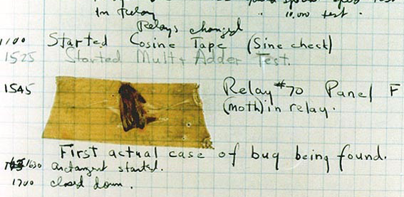

Awards
- 1928 - Phi Beta Kappa [honor society for undergraduate liberal arts and sciences majors]
- 1934 - Sigma Xi [scientific research society]
- 1946 - Naval Ordnance Development Award
- 1962 - Fellow, IEEE
- 1963 - Fellow, American Association for the Advancement of Science
- 1964 - SWE (Society of Women Engineers) Achievement Award, Society of Women Engineers
- 1968 - IEEE Philadelphia Section Achievement Award
- 1968 - Connelly Memorial Award, Miami Valley Computer Association
- 1969 - Computer Sciences "Man of the Year", Data Processing Management Association
Awards
- 1970 - Upsilon Pi Epsilon [international honor society for the computing sciences], Honorary Member, Texas A&M
- 1970 - Science Achievement Award, American Mothers Committee
- 1970 - Harry Goode Memorial Award, American Federation of Information Processing Societies
- 1972 - Honorary Doctor of Engineering, Newark College of Engineering
- 1972 - Wilbur Lucius Cross Medal, Yale University
- 1973 - Epsilon Delta Pi [honor society for computer information systems], Honorary Member, SUNY [State University of New York] Potsdam Chapter
- 1973 - Honorary Doctor of Science, C.W. Post College, Long Island University
Awards
- 1973 - Elected to membership in the National Academy of Engineering.
- 1973 - Legion of Merit
- 1973 - Distinguished Fellow of the British Computer Society
- 1974 - Honorary Doctor of Laws, University of Pennsylvania
- 1976 - Distinguished Member Award, Washington D.C. Chapter, ACM
- 1976 - Honorary Doctor of Science, Pratt Institute
- 1976 - W. Wallace McDowell Award, IEEE Computer Society
- 1980 - Three honorary doctorates
- 1980 - Meritorious Service Medal
- 1981 - Three honorary doctorates
- 1982 - Two honorary doctorates
Awards
- 1983 - Five honorary doctorates
- 1983 - Institute of Electrical and Electronic Engineers Computer Pioneer Medal
- 1983 - Golden Plate Award, American Academy of Achievement, California
- 1983 - American Association of University Women Achievement Award
- 1983 - Federally Employed Women Achievement Award
- 1983 - Association for Computing Machinery Distinguished Service Award
- 1984 - Eight honorary doctorates
- 1984 - Living Legacy Award, Women's International Center, California
Awards
- 1984 - Woman of the Year Award, Young Women's Christian Association of the National Capitol Area
- 1985 - Seven honorary doctorates
- 1985 - The Grace Murray Hopper Service Center built at NARDAC [Navy Regional Data Automation Center] San Diego
- 1986 - Four honorary doctorates
- 1986 - Defense Distinguished Service Medal
- 1986 - Meritorious Citation, Navy Relief Society
- 1987 - One honorary doctorate
- 1988 - The Charles Holmes Pette Medal, University of New Hampshire
- 1988 - The Emanuel R. Piore Award, Institute of Electrical and Electronics Engineers
- 1990 - National Medal of Technology
Quotes
“It is easier to apologize than to get permission.”
Quotes
"A ship in port is safe, but that is not what ships are for. Sail out to sea and do new things."
Quotes
"I always promise during my talks that if anyone in the audience says during the next 12 months, 'But we've always done it that way,' I will immediately materialize beside him and haunt him for the next 24 hours and see if I could get him to take a second look."
National Medal of Technology
This award is the highest honor the United States can confer for achievements related to technological progress.
The "Bug"

The mythic beast once thought etymologically, to be responsible for the term computer bug.